RFQs are used by sales representatives to assist customers and meet their needs through negotiations on a better price, more convenient quantities of products, or additional services. Once a customer submits a request for quotes in the Oro storefront, it immediately becomes available in the Oro management console.
Prior to starting your work with RFQs, make sure that you have:
Configured RFQ related workflows — activate or deactivate the RFQ workflows that control the interactions between the storefront and the management console. These workflows help buyers and sales managers run the process automatically and provide the corresponding status upon this interaction.
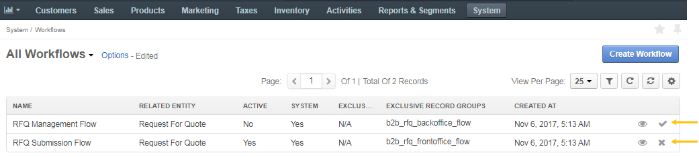Configured RFQ notification options — configure RFQ notification options to ensure that both the customers and the sales representatives receive email notifications on submitting a new RFQ.
Configured guest RFQs — to let unregistered customers request quotes on the items they are interested in, you can enable guest RFQ forms in your Oro application.
Note
See a short demo on how to manage RFQs in OroCommerce, or keep reading the step-by-step guidance below.
To view all the Requests for Quotes, navigate to Sales > Requests for Quote in the main menu.
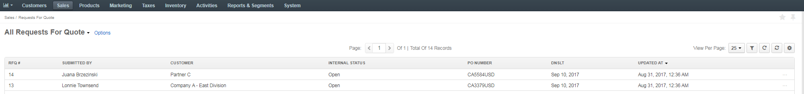Here, you can perform the following actions:
View per page — In the list, select the number of items to be displayed per page. Available options are 10, 25, 50, and 100.
Filter — Click to show filters per column. You can limit displayed items to those that match filtering criteria provided.
Sort — To sort the items by the values in a particular column (e.g. RFQ#, Submitted by, etc.), click the respective column header. When sorting is ascending, an upward arrow appears next to the column name. When sorting is descending, a downward arrow appears.
Refresh — Click to reload the information about the items. If another user recently updated the item details, these changes are reflected upon the refresh.
Reset — Click to roll back the view per page, filters and columns configuration to the default values.
Manage columns — Open the Grid Settings by clicking to see the list of columns that organize the item details. To reorder the columns, click and hold the column name, then drag it to the new location. To show / hide a column, select / clear the Show check box next to it.
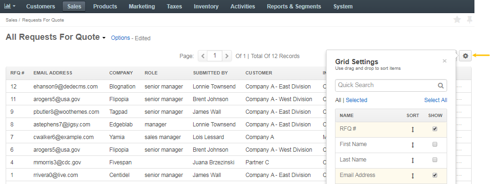
Choose the required RFQ in the list, hover over the More Options menu and perform one of the following:
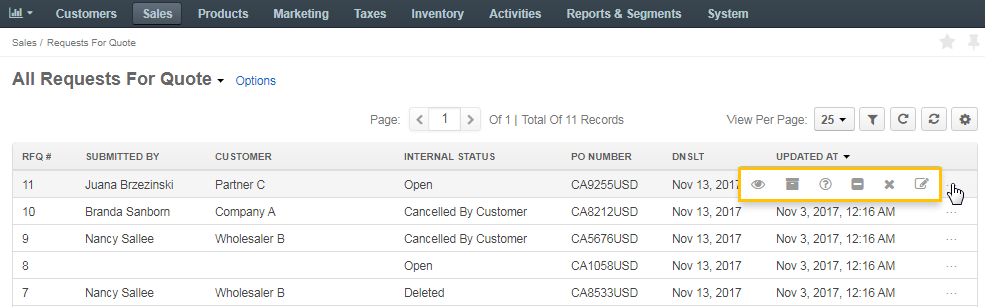The visibility of the RFQ statuses, displayed below, depends on whether the corresponding workflow is enabled or disabled. The statuses are available for customers and sales representatives when RFQ Submission Flow and RFQ Management Flow workflows are activated in the system configuration.
Customer Statuses (correspond to RFQ Submission Flow on the RFQ page) are the statuses displayed to customers in the storefront. In the management console, they are visible on the RFQ page:
- Submitted
- Pending Approval
- Requires Attention
- Cancelled
Internal Statuses (correspond to RFQ Management Flow on the RFQ page) are the statuses displayed in OroCommerce to the sales personnel:
- Open
- Processed
- More Information Requested
- Declined
- Cancelled
- Deleted
Note
RFQs with internal status Deleted are not visible in the storefront.
The following table describes which options are available for each of the statuses, and how the corresponding transitions change them.
| Step | Current Internal Status | Current Customer Status |
|---|---|---|
| An RFQ is submitted by a customer | Open | Submitted |
| The RFQ is marked as processed by sales representative. The customer is not authorized to view this status | Processed | Submitted |
| Sales representative requests more information from the customer | More Information Requested | Requires Attention |
| The customer responds to the request and provides the additional information | Open | Submitted |
| The RFQ is declined | Declined | Cancelled |
| The RFQ is deleted and no further actions are possible unless it is reopened | Deleted | The RFQ is removed from the customer user’s page |
To view a specific RFQ in the management console:
From the Requests for Quote page, you can perform the following actions:
Use RFQ Transitions if system workflows are active
Use More Actions at the end of the required RFQ row to add a note, send an email or add an event.
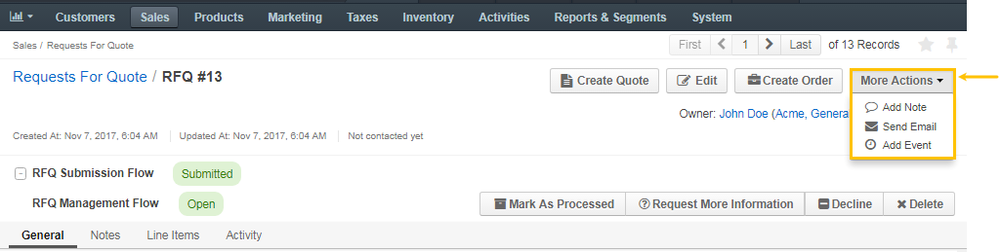To create a new quote from a specific RFQ:
See more information about creating a quote from the RFQ in the relevant Create a Quote from the RFQ topic.
Additionally, you can perform the following actions by clicking on the corresponding buttons on the far right of the Quote page:
Click to edit the quote.
Click to clone the quote.
Click to delete it.
Click Send to Customer to send a notification email message the customer user regarding their quote.
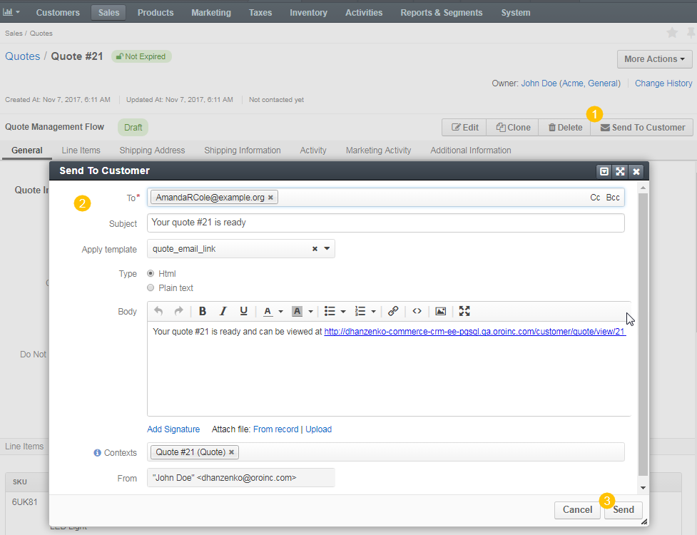Once the message is prepared and sent, the quote backoffice status is changed to Sent to customer.
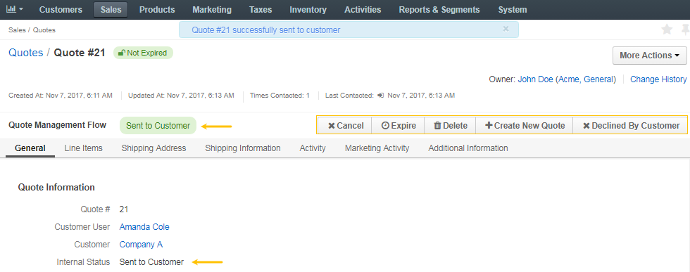From this page, you can cancel or expire the quote, delete the quote, and the backoffice status will change to Closed.
Additionally, you can create a new quote for the customer, or, if the customer declined the offer, you can mark this quote as Declined by Customer.
For more detailed information, please check the Quote Management Flow to learn additional details on the steps and actions available at every step.
To edit an RFQ:
Navigate to Sales > Request for Quotes in the main menu.
Find the required RFQ and click on it.
Click Edit on the top right of the page.
Check the fields required in the General section and modify the information, if necessary.
Add notes and assignees.
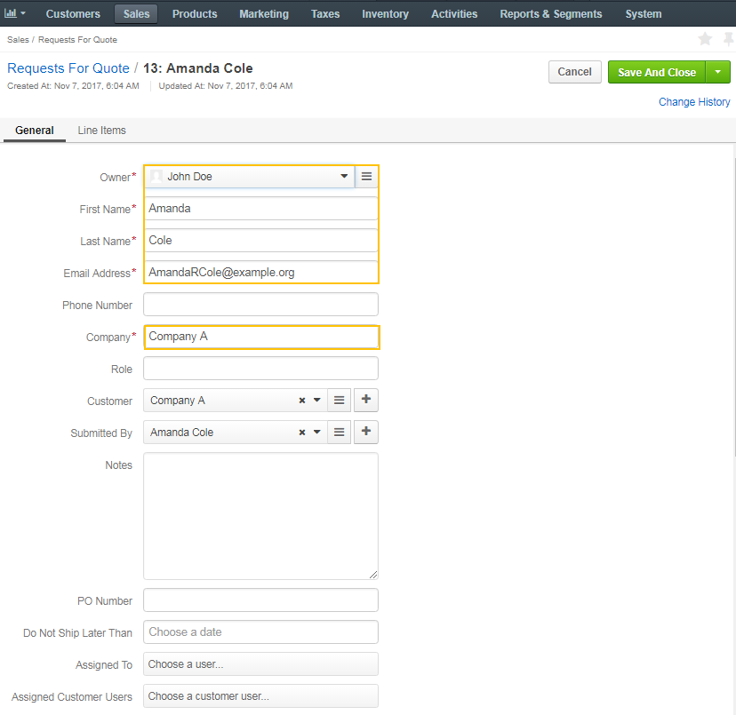Adjust target prices, add additional lines and products.
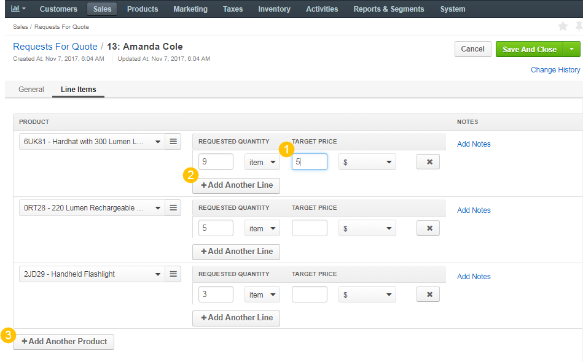Click Save and Close on the top right to save all the changes made.
To create an order from an RFQ:
Note
You can find more information on how to create an order from an RFQ, add additional products, add offers specific for the customer, edit or add shipping and billing information, calculate shipping options, add discounts and more, in the relevant Create an Order from an RFQ topic.
The More Actions menu enables users to add notes to the order, send an email to the customer or add an event. An event could be used to schedule a call or a meeting.
Note
The workflow transitions are available for customers and sales representatives when RFQ Submission Flow and RFQ Management Flow workflows are activated in the system configuration.
To control RFQ using transitions exposed by RFQ workflows (RFQ Submission Flow and RFQ Management Flow):
Now you can perform the following actions with an RFQ in the management console:
Once the RFQ is submitted by a customer in the storefront, it becomes immediately available in the RFQ management console in the Open status.
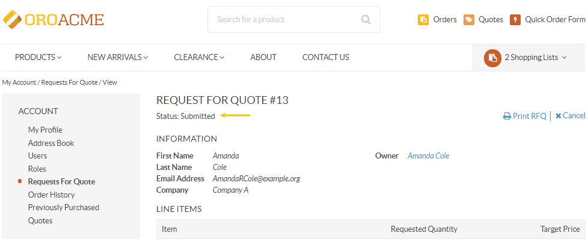 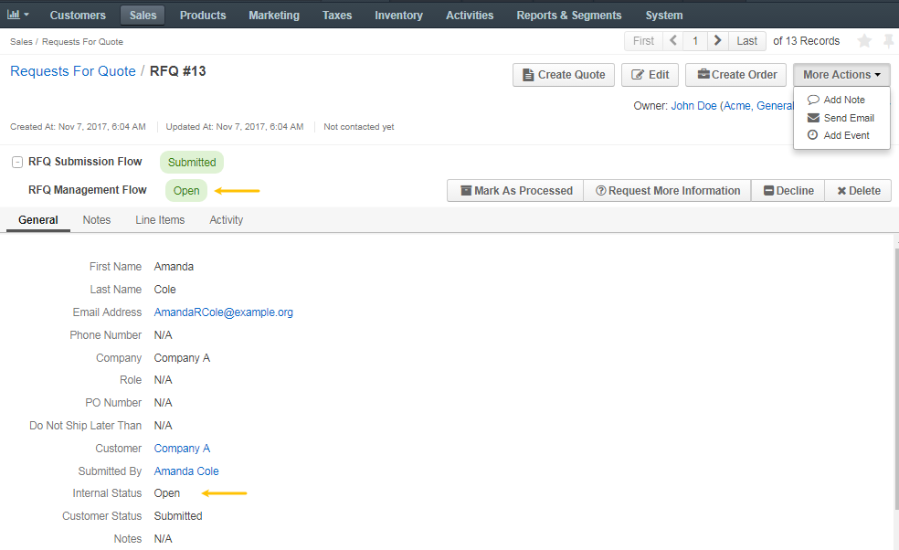To mark the RFQ as processed, click Mark as Processed on the RFQ page. This will notify the assigned sales representative that the quote is being processed.
Marking RFQ as processed will change its internal status to Processed.
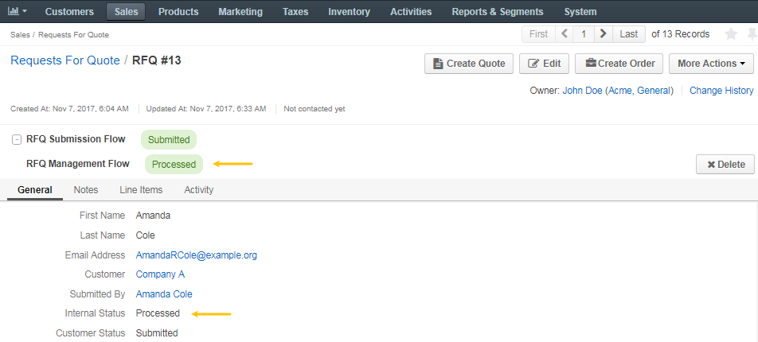To request more information from a customer:
Click Request More Information to open a text dialog for you to communicate with the customer.
Enter a comment.
Click Submit.
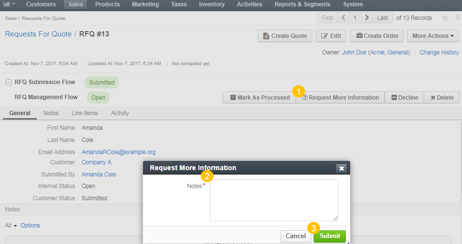The customer will be notified by email and through the customer’s store account that more information is required.
The internal status should then change to More Information Requested, and the customer status should change to Requires Attention.
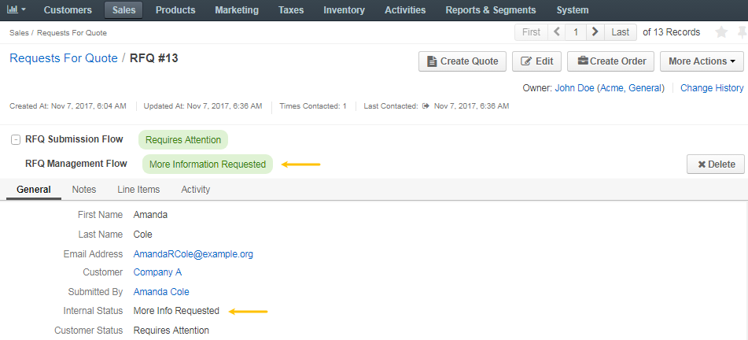Once the customer responds to the request for additional information, the assigned sales representative is notified that the customer has provided the requested information and can continue processing the request.
The internal status changes back to Open, and the customer status changes back to Submitted.
To decline the RFQ, click Decline on the RFQ page.
This will change the internal status to Declined, and the customer status to Cancelled.
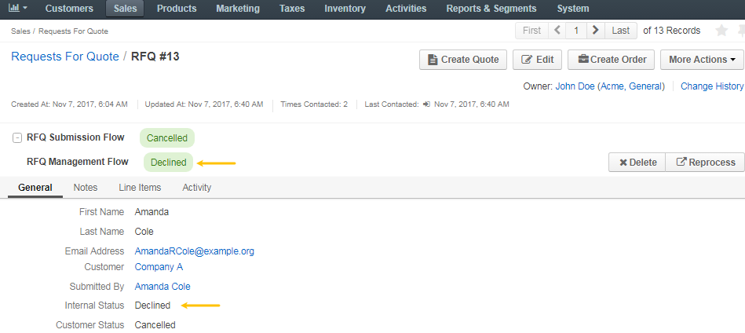To delete the RFQ from the list, click Delete on the RFQ page.
The RFQ will be removed from the customer user’s account.
The internal status will be changed to Deleted.
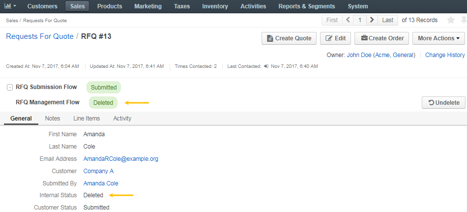The RFQ management procedure depends on the active RFQ-related workflows.
Out of the box, OroCommerce supports the following:
{kind=link}
{kind=link}
{kind=link}
{kind=link}
{kind=link}
{kind=link}
{kind=link}